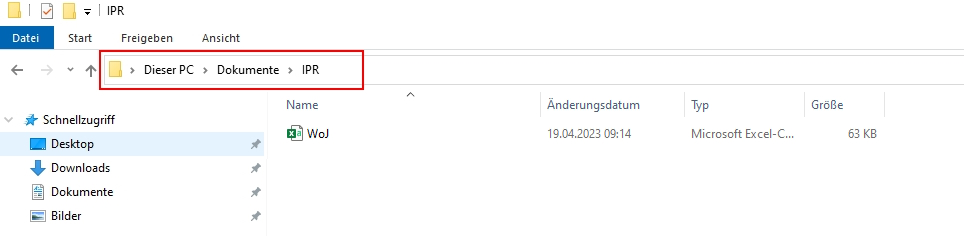
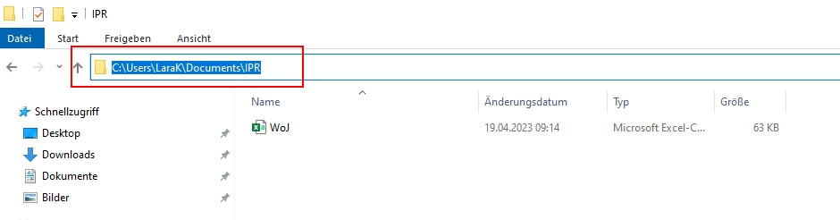

3 Tutorial: Working with data (files)
After working through Tutorial 3, you’ll…
- understand how to import data
- know how to select variables in data frames
- know how to access values in data frames
3.1 Defining your working directory
In most cases, you do not want to manually enter all your values into R and combine them with the “c()” function. Instead, you want to import data files that you already have on your drive/personal computer. The first step to importing your data into R is to define your working directory.
Your working directory is the folder from which data can be imported into R or to which you can export and save data created with R.
Create a folder that you want to use as your working directory for this tutorial (or use an existing one, that also works). For example, I’ve created a folder called “IPR” (short for In Public Repository). Go to that folder and copy the path to it:
| Image: Working Directory on Windows |
|  |
| Image: Copy Working Directory on Windows |
|  |
On Mac, you go to your folder and right click on it. An options menu opens and you can copy the folder path:
| Image: Copy Working Directory on MAC |
 |
Now you know where this working directory is located - but R should know, too! Telling R from which folder to import data or where to export data to is also called setting your working directory. We call a function called setwd() (you guessed right: short for “setting your working directory”) which allows us to do exactly that.
Important: The way this working directory is set differs between Windows- and Mac-Operating Systems.
Windows: The dashes need to be pointing towards the right direction (if you simply copy the path to the folder, you may need to replace these signs “\” with “/”)
setwd("C:/Users/LaraK/Documents/IPR")Mac: You may need to add a “/” at the beginning like so:
setwd("/Users/LaraK/Documents/IPR")If you have forgotten where you set your working directory, you can also ask R about the path of your current working directory with getwd():
getwd()## [1] "C:/Users/LaraK/Documents/IPR"3.1.1 Optional: Setting the working directory on a remote desktop
The LMU Munich provides you with remote desktop access to the PCs in the local CIP-Pools. If you want to use your remote desktop to run R & RStudio, you can follow this link to log into the remote desktop. This is a great fix if – for whatever reason – you can’t get R(Studio) installed on your machine and need a quick solution!
Once you have logged in to the remote desktop, you can open RStudio and set the working directory (and import data) just like it is described in this tutorial (see next image).
| Image: Working Directory (& Data Import) on a Remote Desktop |
 |
The drawback: Since Windows does not allow RStudio to save script files without permission (and the IfKW for some reason has not given the permission), you can’t save script files on the remote desktop. You can solve this with a workaround:
- Paste your script into a text file before closing RStuio. E.g., WordPad is pre-installed. Save this file as .R.
- When you want to load your script in RStudio, right click on the .R file and choose “open with RStudio”.
| Image: Saving a Script File on a Remote Desktop |
 |
3.2 Import data from your working directory
After setting the working directory, you need to transfer the data file that you want to work with to that folder (here: the “IPR” folder). Download the “data_tutorial3.csv” from Moodle, i.e., the 2. November material folder. The data set consists of data that is completely made up - a survey with 20 fictional students in a fictional seminar. We only use this data here so you can understand differences between types of data and types of objects.
The data file data_tutorial3.csv is structured as follows:
- Each row contains the answer for a single student.
- Each column contains all values given by students for a single variable.
The variables included here are:
- name: the name of each student
- age: the age of each student (in years)
- date: the date on which each student was surveyed (in YYYY-MM-DD)
- outlet: the type of media outlet each student’s mainly uses to get information
- outlet_use: the time each student uses this media outlet daily (in hours)
- outlet_trust: how much each student trusts this media outlet (from 1 = not at all to 5 = very much)
We’ll read in the file with read.csv(). Here, we specify where to find the data file with the file path in quotation marks, but you don’t need to specify that path if you have already set it as your working directory. In addition, we provide an argument to let R know that the first row contains variable names with the argument header = TRUE. In the end, we assign our data file to a source object that we call survey. The data is now stored in this object.
While read.csv() reads in comma-separated values, read.csv2() reads in values that are separated by semicolons.
survey <- read.csv2("data_tutorial3.csv", header = TRUE)survey## X.2 X.1 X name age date outlet outlet_use outlet_trust
## 1 1 1 1 Alexandra 20 2021-09-09 TV 2 5
## 2 2 2 2 Alex 25 2021-09-08 Online 3 5
## 3 3 3 3 Maximilian 29 2021-09-09 Zeitung 4 1
## 4 4 4 4 Moritz 22 2021-09-06 TV 2 2
## 5 5 5 5 Vanessa 25 2021-09-07 Online 1 3
## 6 6 6 6 Andrea 26 2021-09-09 Online 3 4
## 7 7 7 7 Fabienne 26 2021-09-09 TV 3 2
## 8 8 8 8 Fabio 27 2021-09-09 Online 0 1
## 9 9 9 9 Magdalena 8 2021-09-08 Online 1 4
## 10 10 10 10 Tim 26 2021-09-07 TV NA 2
## 11 11 11 11 Alex 27 2021-09-09 Online NA 2
## 12 12 12 12 Tobias 26 2021-09-07 Online 2 2
## 13 13 13 13 Michael 25 2021-09-09 Online 3 2
## 14 14 14 14 Sabrina 27 2021-09-08 Online 1 2
## 15 15 15 15 Valentin 29 2021-09-09 TV 1 5
## 16 16 16 16 Tristan 26 2021-09-09 TV 2 5
## 17 17 17 17 Martin 21 2021-09-09 Online 1 2
## 18 18 18 18 Anna 23 2021-09-08 TV 3 3
## 19 19 19 19 Andreas 24 2021-09-09 TV 2 5
## 20 20 20 20 Florian 26 2021-09-09 Online 1 53.3 Subsetting variables / columns in data frames
In Tutorial: Using R as a calculator your variables where “floating” in your workspace / environment. They were not kept in a container, so you could call them by simply writing their name in the console. When you import data files to R, all variables in that data set a stored into a “container”, i.e. your source object. These containers for variables are called data frame in R.
Variables that are part of a data frame can be accessed by their name, but we need to specify the data frame AND the variable name and combine them with the access operator: $. This takes the form of:
dataframe$variablename
# the first part is the container name, i.e. data frame
# this is followed by the access operator $
# finally, you call the variable by nameFor instance, we could retrieve the variable “name” in our survey data frame by simply using its variable name: We specify the object we want to access, the data frame survey and then retrieve the column name via the operator $:
survey$name## [1] "Alexandra" "Alex" "Maximilian" "Moritz" "Vanessa"
## [6] "Andrea" "Fabienne" "Fabio" "Magdalena" "Tim"
## [11] "Alex" "Tobias" "Michael" "Sabrina" "Valentin"
## [16] "Tristan" "Martin" "Anna" "Andreas" "Florian"You know that the name variable is the fourth column of you data
frame. Therefore, you can also access this column / variable by calling
it by its index number (column index, here: 4). Just like you’ve
learned in Tutorial: Using R as a calculator, you can access
sub-elements of a greater object with square brackets [ ]:
survey[4]## name
## 1 Alexandra
## 2 Alex
## 3 Maximilian
## 4 Moritz
## 5 Vanessa
## 6 Andrea
## 7 Fabienne
## 8 Fabio
## 9 Magdalena
## 10 Tim
## 11 Alex
## 12 Tobias
## 13 Michael
## 14 Sabrina
## 15 Valentin
## 16 Tristan
## 17 Martin
## 18 Anna
## 19 Andreas
## 20 FlorianNote: While the first command gives you the names as a vector, the second one gives you the name as a data frame object with only one column. This keeps the column header “name” intact. However, if you want to retrieve a vector using the column index, you need to provide two indices: one for the row that you want to select, followed by a comma, and one for the column. Since we want to select all rows, but only column No. 4, we need leave the row No. blank:
survey[,4] # column index = 4## [1] "Alexandra" "Alex" "Maximilian" "Moritz" "Vanessa"
## [6] "Andrea" "Fabienne" "Fabio" "Magdalena" "Tim"
## [11] "Alex" "Tobias" "Michael" "Sabrina" "Valentin"
## [16] "Tristan" "Martin" "Anna" "Andreas" "Florian"3.4 Subsetting observations / rows in data frames
Using the same indexing technique, you can also select an entire row by providing a row index and leaving the column index blank:
survey[1,] # row index = 1## X.2 X.1 X name age date outlet outlet_use outlet_trust
## 1 1 1 1 Alexandra 20 2021-09-09 TV 2 53.5 Subsetting values / cells in data frames
You can subset values of a data set by calling a variable by its name. You just have to specify the data frame, the variable name AND the row index. For example, let’s look only at the first name in the data, which is Alexandra.
survey$name[1]## [1] "Alexandra"Any educated guesses on how to access the exact same value using the column index instead of the column name?
Yeah, we enter the row index first, followed by a comma, and finish with the column index:
survey[1,4] # row index = 1, column index = 4## [1] "Alexandra"Of course, you can use complex indexing on data frames. Let’s look at the first ten rows of the fourth (name) and fifth (age) column:
survey[1:10,4:5]## name age
## 1 Alexandra 20
## 2 Alex 25
## 3 Maximilian 29
## 4 Moritz 22
## 5 Vanessa 25
## 6 Andrea 26
## 7 Fabienne 26
## 8 Fabio 27
## 9 Magdalena 8
## 10 Tim 263.6 Subsetting data with conditions
Let’s say we want to select all names of students who are older than 25. This time, we’ll need to use a condition to select our rows:
survey[survey$age > 25,4] ## [1] "Maximilian" "Andrea" "Fabienne" "Fabio" "Tim"
## [6] "Alex" "Tobias" "Sabrina" "Valentin" "Tristan"
## [11] "Florian"# Read: I want to select column 4 (name) from the survey data frame
# and display all rows in which the age column of the survey data frame has a value > 25Alternatively, if you want to show all columns that belong to students who are older than 25, you would do it like that:
survey[survey$age > 25,]## X.2 X.1 X name age date outlet outlet_use outlet_trust
## 3 3 3 3 Maximilian 29 2021-09-09 Zeitung 4 1
## 6 6 6 6 Andrea 26 2021-09-09 Online 3 4
## 7 7 7 7 Fabienne 26 2021-09-09 TV 3 2
## 8 8 8 8 Fabio 27 2021-09-09 Online 0 1
## 10 10 10 10 Tim 26 2021-09-07 TV NA 2
## 11 11 11 11 Alex 27 2021-09-09 Online NA 2
## 12 12 12 12 Tobias 26 2021-09-07 Online 2 2
## 14 14 14 14 Sabrina 27 2021-09-08 Online 1 2
## 15 15 15 15 Valentin 29 2021-09-09 TV 1 5
## 16 16 16 16 Tristan 26 2021-09-09 TV 2 5
## 20 20 20 20 Florian 26 2021-09-09 Online 1 5Of course, you can index more than one column:
survey[survey$age > 25,4:5]## name age
## 3 Maximilian 29
## 6 Andrea 26
## 7 Fabienne 26
## 8 Fabio 27
## 10 Tim 26
## 11 Alex 27
## 12 Tobias 26
## 14 Sabrina 27
## 15 Valentin 29
## 16 Tristan 26
## 20 Florian 26Finally, you can use multiple conditions:
survey[survey$age >= 25 & survey$outlet_trust < 3,]## X.2 X.1 X name age date outlet outlet_use outlet_trust
## 3 3 3 3 Maximilian 29 2021-09-09 Zeitung 4 1
## 7 7 7 7 Fabienne 26 2021-09-09 TV 3 2
## 8 8 8 8 Fabio 27 2021-09-09 Online 0 1
## 10 10 10 10 Tim 26 2021-09-07 TV NA 2
## 11 11 11 11 Alex 27 2021-09-09 Online NA 2
## 12 12 12 12 Tobias 26 2021-09-07 Online 2 2
## 13 13 13 13 Michael 25 2021-09-09 Online 3 2
## 14 14 14 14 Sabrina 27 2021-09-08 Online 1 23.7 Take-Aways
- Setting the working directory: tells R where your folder with
the data is located on your drive,
setwd(your_filepath) - Import data: after setting the working directory, with
read.csv()(comma-separated) orread.csv2()(semicolon-separated) - Access variables: either by the access operator $
(
dataframe&variablename) or by the column index[,columnNo.] - Access values: by indexing, i.e. using
[ ]and row + column indices - Conditions: you can select rows based on conditions, e.g.:
greater
>, greater or equal>=, equal==, and not equal!=
3.8 Additional tutorials
You still have questions? The following online guides can help you with that:
Now it’s your time to get into coding: Try Exercise 1.